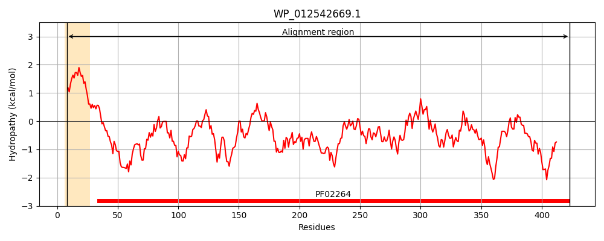
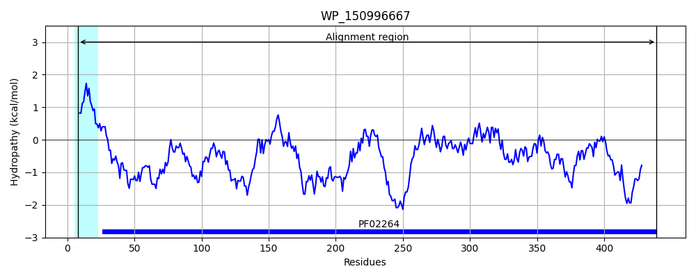
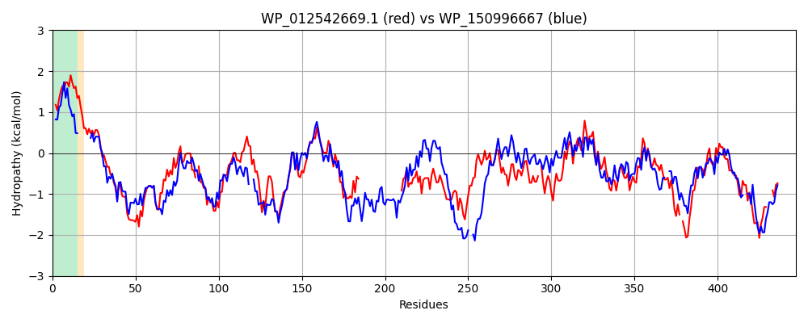

Hit Accession: WP_150996667
Hit TCID: 1.B.3.1.14
Hit Description: gnl|BL_ORD_ID|21978 gnl|TC-DB|WP_150996667.1|1.B.3.1.14 maltoporin LamB [Aeromonas veronii]
Mach Len: 447
e:0.000000
Query TMS Count : 1
Hit TMS Count: 1
TMS-Overlap Score: 0.900000
Predicted Substrates:CHEBI:17593;maltooligosaccharide, CHEBI:6668;maltose
BLAST Alignment:
Score: 841 , Bit scores: 328 bits, E-value: 2.8e-109, Alignment length: 447, Percentage identity: 42
Query: 8 LSAALAAALIAPSAFAATAAIPSIDFHGYMRAGVGVSGDGSEAEWQKNKLGRLGNESDTYGELELGSEVYKKDDVSFYLDSMVSMVS-DGSNDNETTLNDDAQFGLRQLNLQIKGLIPGDPNAVIWGGKRYYQRHDLHIIDTKYWNISGSGAGVENYTLGPGAVSLAWIRGDANDVDYRVDGDSN-------------------------VNINYIDLRYAGWKPWSGSWTEFGIDYAMPNTTKKQDSYGGLYDAENGVMLTGEISQDMLGGYNKTVLQYANKGLAQNMVSQG-GGWYDMWNYVNDATGYRVINTGLIPITEKFSINHVLTWGSADDITDYTDKTRMLSLVARGQYQFTDYVRLIGEVGGFYQKDSYN-NGTSYKQAGEKYTIALGLADGPDFMSRPELRIFASYLNDSEDGKPFEDQTA---NNTWNFGVQVEAWW 423
++AA+ AAL + +AFA +DFHGY R+GVGVS +G KN++GRLGNE++TY E++LG EVY K++ +FY+DSM +MV+ D E+T D A F LRQ N+Q K L G N +W GKRYYQRHD+HI DT YW++SG+GAGVEN +GPG +S+A +R D D Y+ D ++N VN N D+RYAG W+ + E G DYAM N T +Q+ D ++G M T E++Q MLGG+NKTV QY GLA+ V G G + + G+R+IN G++P+ +K H + + A+ + T S V R Y++ D ++ I EVG Y KD+ + NG G KYT+A + G F +RPE+R+FASY+ +DG E+ ++ WNFGVQ EAWW
Sbjct: 8 IAAAVTAALASQAAFA-------VDFHGYFRSGVGVSDNGDMQTMSKNRVGRLGNEAETYSEVQLGQEVYNKNNQTFYVDSMFAMVAGKQGRDWESTSGDSADFALRQFNVQAKNLFGG--NETLWAGKRYYQRHDIHISDTYYWDVSGAGAGVENIEVGPGKLSVAVVRNDPWDAIYKGDTEANTQYRLDANGNYVLDDKGNKIKIDDRVNTNTFDIRYAGIPLWTDASLEVGYDYAMANLTDEQERQNP--DYKDGHMFTAELTQSMLGGFNKTVAQYFLDGLAKQGVDYGAGSGSGLSQAASSGDGFRLINWGVLPVGDKVEFGHQILYAQANGLDKDTTDIDTFSAVVRPMYKWNDVMKTIAEVG--YFKDNKDVNGVKTSSDGAKYTLAQAWSAGSSFWARPEIRVFASYM--QQDGNFRENSNGIKQDDAWNFGVQAEAWW 439 | Protein Hydropathy Plots: |
|---|
|  |  |
Pairwise Alignment-Hydropathy Plot:
|
|---|
|  |